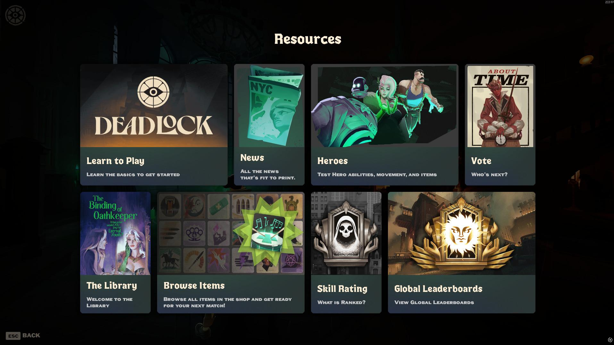
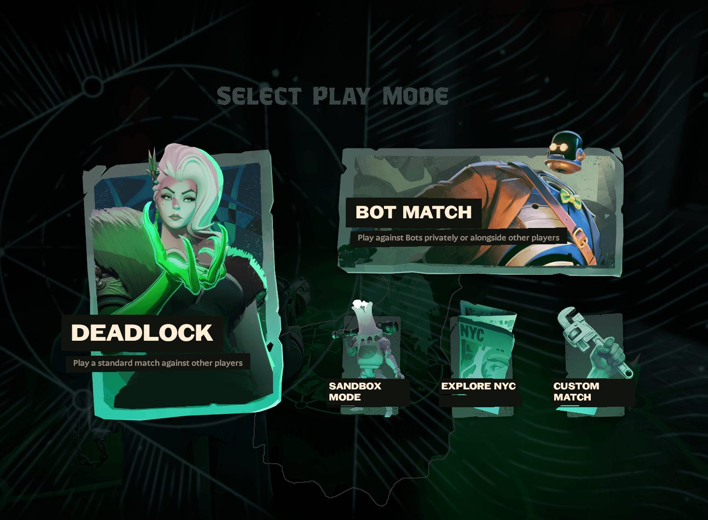
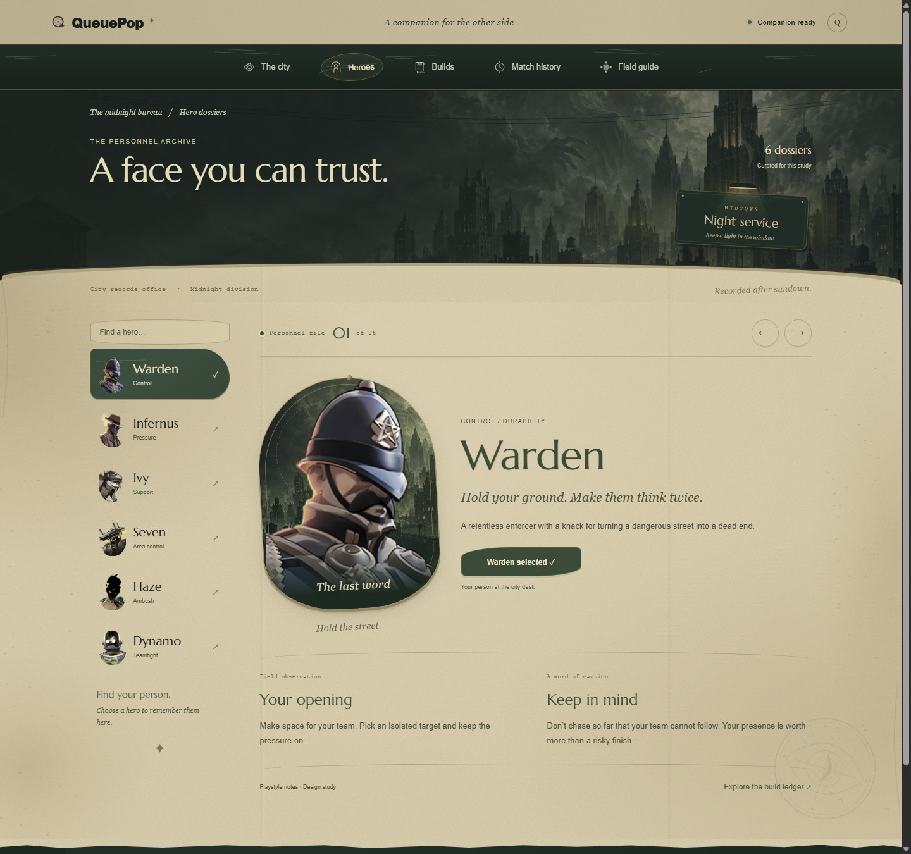
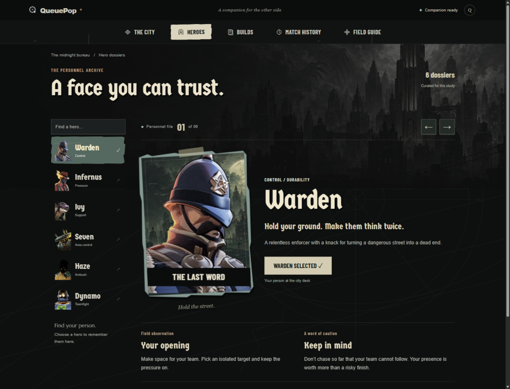
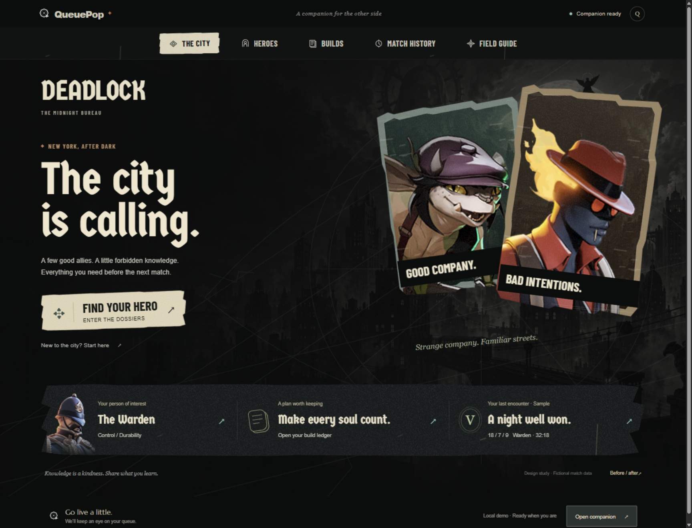
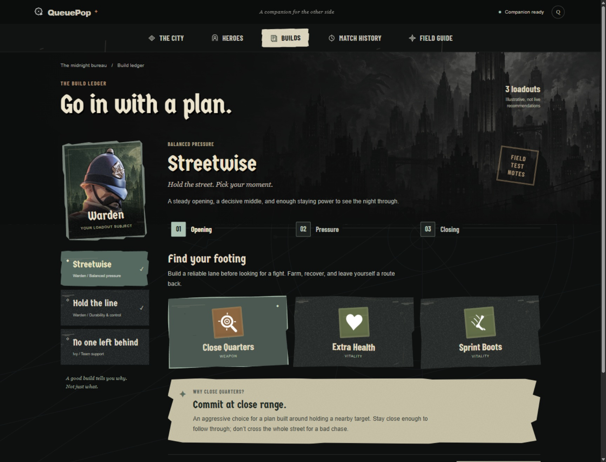
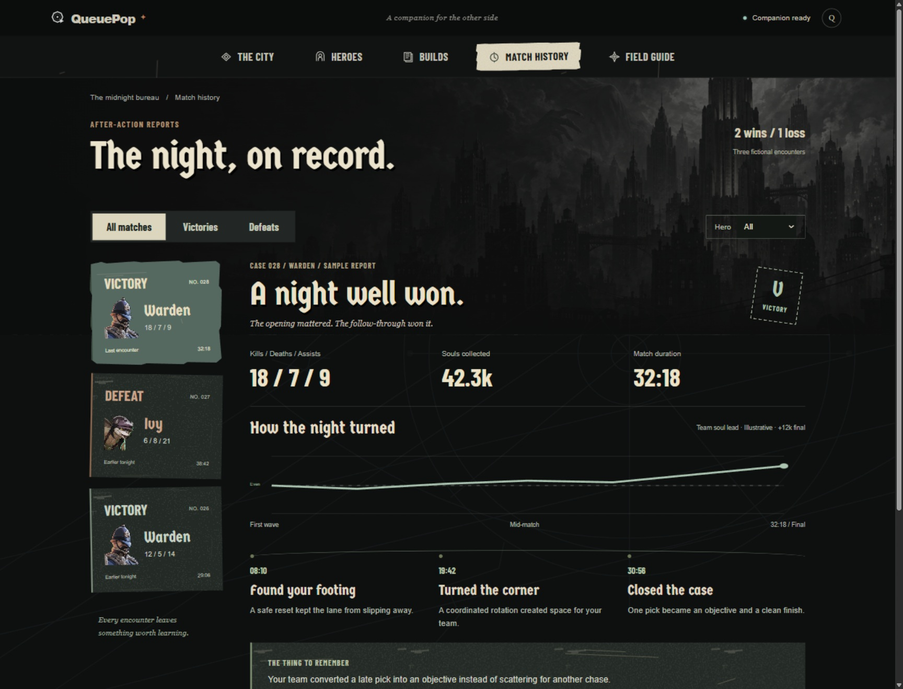
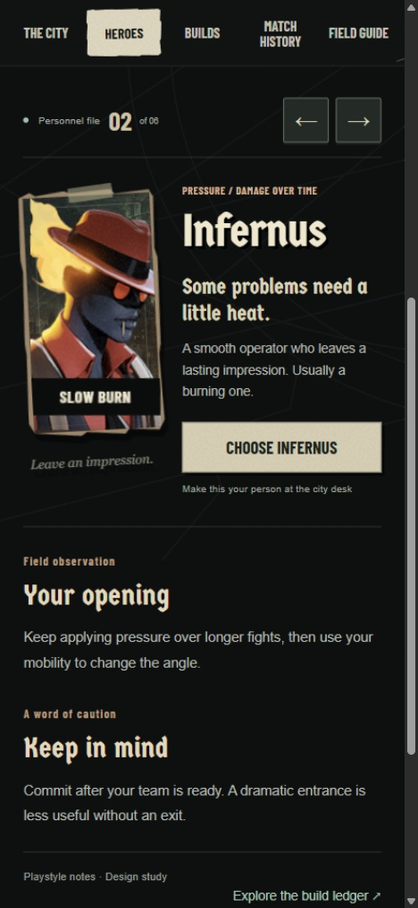
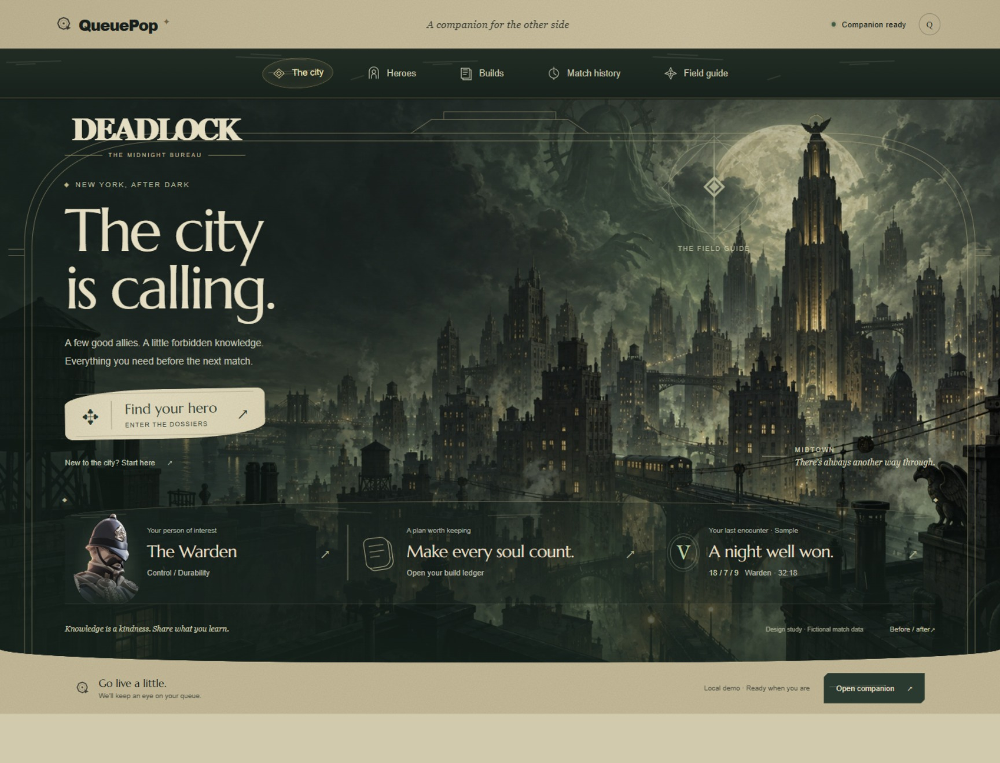

The previous direction had the period detail, but too much green parchment, smooth framing, and delicate type. These supplied references ask for black space, cream lettering, saturated characters, torn print, and occult linework. This pass changes that foundation across the city, heroes, builds, and history.
Your reference · Resources

Your reference · Play mode

Before · The green bureau

Now · The street poster

The city entrance

The build workbench

After-action reports

Phone layout and earlier directions



This remains a local frontend design study. The display fonts and decorative symbols are visual approximations, not Valve's proprietary type or ability icons. Match records are fictional and builds are illustrative.
Explore the new direction ↗